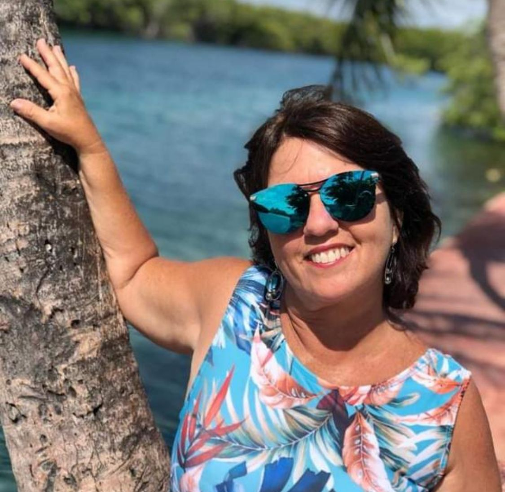

O lixo é um problema social muito grande, devemos ter um olhar muito crítico diante do que podemos fazer pra minimizar essa situação, reaproveitando e reciclando, por isso que temos peças feitas com garrafas, tampas, potes, etc.
Iniciativa Galho Seco
"Bem, quando eu era criança via em meu pai o esforço tremendo que ele fazia para fazer brinquedos para nós, e um desses brinquedos chamou muito a minha atenção pelo fato de ter sido um carrinho de madeira com rodas de madeira, de 10 polegadas na traseira e seis na dianteira. A partir daí despertou essa vontade de trabalhar com madeira através do artesanato. tudo começou com a necessidade de ter uma ocupação profissional e uma renda, por mínima que fosse pois as contas não param de chegar." - Paulo Marques
"Sempre admirei a beleza que a natureza nos proporciona, principalmente as árvores, os galhos, os pássaros, flores... tudo é uma inspiração pra nossos trabalhos. Em 2021 ainda na pandemia, meu esposo ficou desempregado como tantas outras pessoas, no início foi a luta por um emprego de "carteira assinada" em vários lugares, mas sem sucesso, foi dando um certo desânimo e necessidade de ser "útil", ter o prazer de produzir algo. Foi neste momento que tive a idéia de criar uma página no Instagram e divulgar os trabalhos feito por nós." - Wandilma Burgo
Cofira alguns de nossos produtos!
Temos o objetivo de dá uma maior visibilidade para a reutilização do lixo e sermos inspiração para as pessoas que tenham pouco recursos financeiro criar seus objetos, mobílias com algo que seria desprezado no lixo. Tudo fazemos na parceria e com muito amor.Nosso trabalho nos dá prazer. Agendamos e fazemos entregas em toda região metropolitana de Recife-PE.